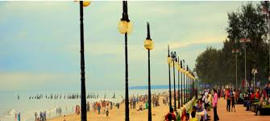
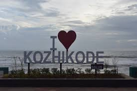
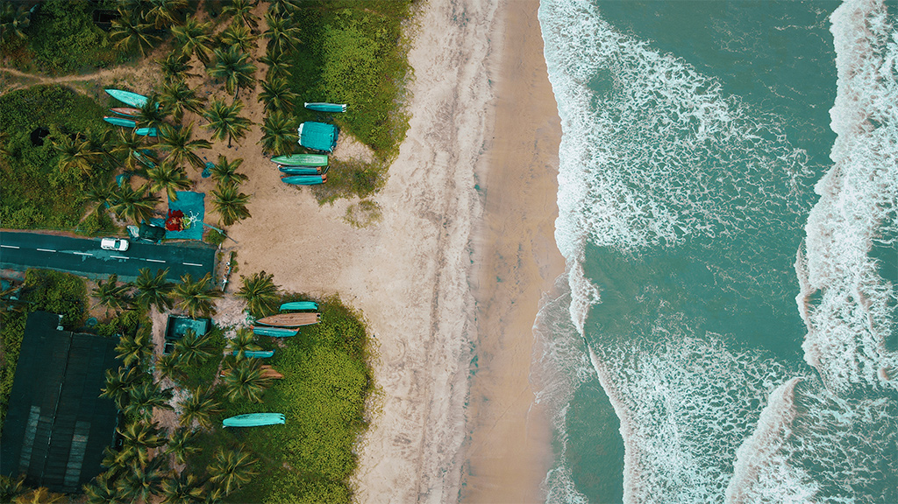

Keralatourism
The Heart of Kozhikode Culture
Tourism is travel for pleasure and Kozhikode offers many such spots which take you through the past,present and future of the City
Kallayi.
Lokanarkavu Temple.
Pazhassi Raja Museum & Art Gallery.
Nadapuram Masjid.
Parappalli Beach.
Aripara Waterfalls.
Thikkodi Drive-In Beach.
Kadalur Point Lighthouse.



